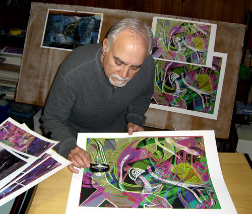
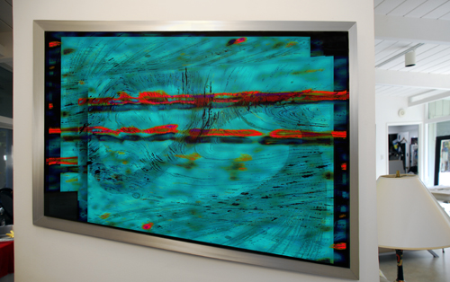
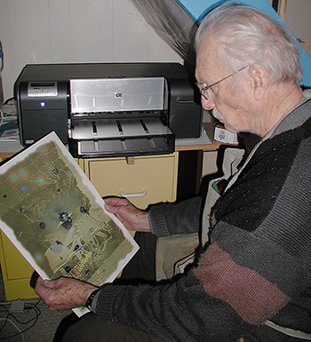
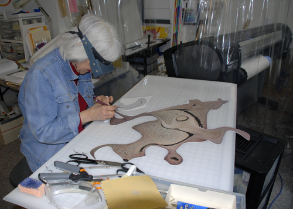
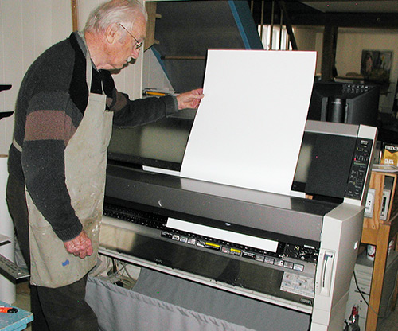
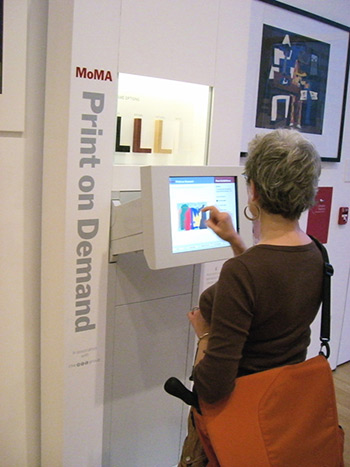
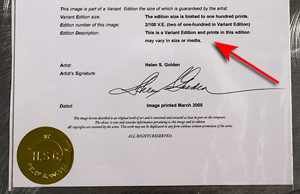
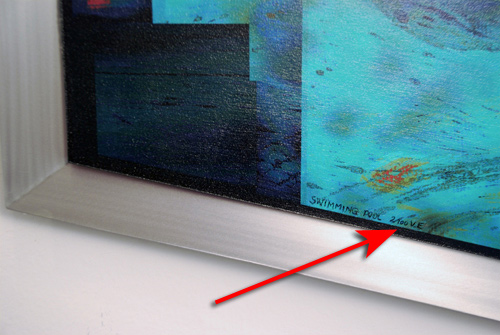
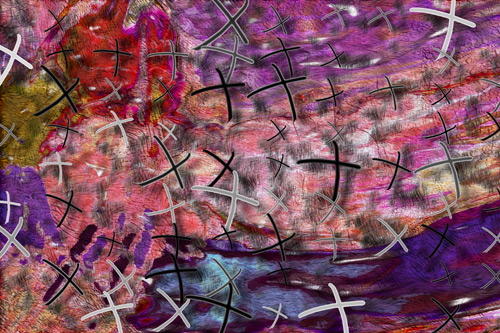

Printing Digital Art:
Fine Artists
Explore the Promise of New Markets
by JD Jarvis
Las Cruces, New Mexico
Digital tools and techniques have revolutionized how most imagery
and even Fine
Art is being made. Photography, for example, is thought of today as primarily a
digital endeavor.
The general public understands and, for the most part, has accepted that scanning
and inkjet
technology has improved the quality of art reproduction to the extent that we see
what could be
described as an entirely new product within the art reproduction market. And,
although it remains
somewhat misunderstood, the making of original digital fine art directly within the
workings of a
computer is a widely practiced and accepted means for making Contemporary Art.
Regardless of which
approach or combination of the above you take toward making your digital imagery,
chances are you
materialize that work in the form of prints either on paper, canvas or some other
substrate
associated with the often fickle and arcane world of Fine Art.
As with nearly every other endeavor in modern society the Internet beckons to you
with the
potential for worldwide markets and fast, flawless distribution of your digital
goods. Virtual
galleries coupled with print-on-demand websites continue to spring up offering both
digital and
traditional artists global markets and even hands-free printing, framing and
shipping services.
For an artist, the idea of having a presence on a site that is open day or night to
the entire
world and that might produce prints and perhaps even frame and ship them to your
valued
customers, then deposit the spoils directly into your bank account seems to answer
all one's
needs. A quick check of the web tells us that such marketing services are already
beginning to
spring up. In a perfectly digital world this is the answer to your dreams.
However, the world of Fine Art is not entirely perfect nor is it pervasively
digital. As one who
practices this
means of making
art,
you may already know there are many established Fine Art paradigms that are
challenged by digital
media. I, as one
who wishes to
have his original artwork shown and appreciated as Fine Art, got together with two
other
U.S.-based
artists who
possess a wealth of
experience and
knowledge -- Helen Golden* and Mel Strawn** -- to ask ourselves some basic
questions about these
web based markets.
In order to
do this we:
1) Examined how is the best way to deliver image files to a distant printing
service.
2) Organized our own tests as to see how well and under what circumstances would
distant printing
systems deliver
acceptably consistent high quality prints.
3) Finally, we took a look at these emerging web based markets, categorized their
operations and
made some
determinations as to how well they met our interests and goals in producing Fine
Art digitally.
1. DIGITAL DELIVERY
First of all, as one would hope, a digital file is a digital file regardless of how
that file is
delivered to the
print provider. Helen, Mel, and I exchanged files via the U.S. Postal Service on CD
and the web
with no discernable
difference in the prints these files produced. However, we avoided sending any sort
of compressed
files, such as
JPEGs, which do exhibit artifacts
especially when enlarged. Genuine Fractals files are fine in that a "loseless"
2:1 compression
ratio can be selected when saving files using this plug-in.
We can also confirm that there is no discernable difference between images that are
enlarged using
either Genuine
Fractals or the Adobe Bicubic resampling up to about 300%. Above 300% Genuine
Fractals seems to
have a bit of an
edge. And, if (heaven forbid) you need to enlarge an image say 800%, then the
advice given by
Genuine Fractals to
enlarge the file
400% in G.F., then go the next 200% in Photoshop is well advised.
We found that using FTP sites and software to send files via the web was most
efficient. Mel and I
tried "Pando,"
which is one of the systems that allows you to send large image files via standard
Internet, but
its performance was
clunky, unpredictable and slower than FTP. Having an FTP site to send and receive
large image
files
should be basic
procedure for any web based marketing and printing service. There need be no
hesitation printing
from an
uncompressed digital file that is
sent via the web. Remember, however, that the speed of any Internet delivery is
based on the speed
of your ISP.
The Matter of Size
Exactly what size file to send and print is still a cause of some confusion. This
confusion stems
from two basic
sources. One such source is a misunderstanding of technical terminology and the
other is a result
of the having
printing systems that, in general, do such a good job as to defy common logic.
First, there is the matter of p.p.i. (pixels per inch) versus d.p.i. (dots per
inch). Often these
two are used
interchangeably, but in truth these are two separate sets of measurement. While
they seem to refer
to the same
thing, the p.p.i. is a computer file designation which ultimately indicates the
size of a data
file
in
megabytes. On the other hand, d.p.i. is a printer designation and indicates how
many dots of ink
will be placed on
the printed page per linear inch. The computer monitor has a fixed number of pixels
per inch so
changing the p.p.i
of a file will change how large the image appears on the screen, and so this has
some mistaken
correlation to the
resolution of the image. Resolution is the ability to resolve fine detail. But,
"up-sampling" a
file from its
original 150 p.p.i. size to 300 p.p.i. does not increase resolving power, it simply
doubles the
number of pixels
present in a file that then has two pixels doing what one pixel did before (with
the new pixels
"invented"). There
is no way to increase actual
detail beyond the initial p.p.i. But, there is a difference between actual
resolution and
"perceived detail."
Studies have shown that a person will often judge an image with more contrast to be
"sharper" than
the same image
without the contrast adjustment. Our eye tells us that a "sharper" image has more
detail, but the
actual amount of
image resolution has not changed.
When it comes to bringing that file out of the data state and onto the printed
page, "d.p.i."
describes how fine the
basic dot screen will be. Pixels are then reconfigured and simulated by drops of
ink. But, it is
never a case of one
dot of ink per pixel, because it is often several drops of ink of different colors
that are
required to re-create
one small area of the image. So, p.p.i. does not translate into d.p.i.; therefore,
there are
separate controls and
decisions that a person can make to control these aspects of the file-to-print
flow.
As mentioned, the second source of misunderstanding regarding file versus print
size and the
quality of the printed
image has to do with the almost counter-intuitive ability of today's printing
systems to produce a
high-quality
image. Logic would tell you that more data, as measured by p.p.i., would result in
greater
resolution, which it
does. But, since this data essentially passes through and is screened by the
printer into a
different set of
measurement (namely d.p.i.), this does not automatically translate into a print
with more
resolving
power.
In our experiments, Mel, Helen, and I took 300 p.p.i. files and printed them at
both the 600 and
1200 d.p.i. printer settings native to our HP printers.
We
then down-sampled these files to 150 p.p.i. (essentially throwing away visual data)
and printed
these
at both 600 and 1200 d.p.i. Logic would tell you that there would be highly
discernable
differences
between all
these prints, but in fact the differences were so minor as to warrant
reconsideration of the size
of the files we
create and transmit.

ABOVE: JD Jarvis gets out the magnifying glass to evaluate print quality
differences.
Specifically, the difference in image quality between a 300 p.p.i. file and a 150
p.p.i. file is
not discernable.
Where a larger p.p.i. file becomes important is when you wish to enlarge the
image. As mentioned
before you cannot
create more detail by simply increasing the p.p.i. of a file, so if you intend to
make a print
that
is larger than
the original dimensions of the image file, it is better to start with a larger file
in terms of
p.p.i. What are
the limits? Well, our tests have shown that a 150 p.p.i . file can be enlarged 100%
without
noticeable lose of
detail. And, that a 300 p.p.i file can go as high as 300% enlargement with the same
acceptable
result.
What this means is that an artist can work with a file that is 150 p.p.i. at or
around the final
physical dimensions
of the print they expect to produce and, if it is deemed necessary, this file could
print an image
that is twice the
size you originally planned. This also means that you do not have to send huge
files via the
Internet to a distant
printing service. With faster computers and larger and larger storage systems this
awareness of
minimum file size
may not be as important as it was several years ago, however, if you have lamented
the time it
takes for certain
filters to render an image or how long it takes to upload a file to a FTP site then
I suggest you
run your own test
to confirm this.
Moving on to d.p.i., which is to say moving on to the print itself, both Mel and
Helen report a
slight difference
between files that are printed at 600 or 1200 d.p.i. Comments run that the 1200
d.p.i. prints:
"have more life,
brighter colors, more depth and nuance." Helen reported that it was a bit harder to
tell the
prints
apart when
viewed separately rather than side by side. And, both of these experienced artists
felt that the
differences in
image quality were comparable to the accepted differences that occurred between
traditional prints
that are "pulled"
by hand. It has been my experience that the differences between prints made at 600
d.p.i. and 1200
d.p.i are most
often detected only under a magnifying glass or a jeweler's loupe. Given that the
accepted viewing
distance of a
print starts at three feet or beyond, the fact that you have to get out a
magnifying glass to tell
the difference
is, itself, the answer to the question. Observations that the transitions
between different
colors appear smoother when prints are made at 1200 d.p.i., and the fact that
little time or ink
is saved when printing at 1200 d.p.i. versus 600 d.p.i., means that any respectable
print should
be
made at the maximum d.p.i. settings available with any given printer.

ABOVE: Installed "Swimming Pool" by Helen Golden
We should note that all three of us create images that are more often painterly
than photographic
and, by nature,
these images are more interpretive and rely less on realism than, for example,
portrait
photography. Often our
concerns are with pure colors and blemish-free areas of flat color. As noted above,
to create
images requiring the
highest degree of resolving power you need to start with sufficient p.p.i. to
produce the right
amount of detail for
your specific work. Above all, we encourage you to experiment and confirm what is
right for your
work.
2. CONSISTENCE AT A DISTANCE
After we had established the parameters for the physical aspects of delivering fine
art files via
the Internet, my
two cohorts and I set out to tackle the issues of consistent quality of the prints.
Helen has, as
do I, a
Hewlett-Packard Designjet Z3100 Photo Printer, which she uses to produce her fine
art prints. Mel
has an Epson
Stylus Pro 9000 and a Hewlett-Packard Photosmart Pro B9180 Professional Photo
Printer for printing
his work.
Certainly not a cross section of every
printing system available today; yet, in our own way, we devised a method to
test:
-- Do prints of the identical image file appear different when printed by
"somewhat" different
printing systems?
-- Do identical printing systems at different locations create the same prints?
-- Do printing systems made by totally different manufacturers produce identical
prints?
For a web based art marketing and print delivery system to work these are the basic
issues that
system must address.
Given that some of the more enticing printer models currently offered for Internet
marketing
include the scenario
wherein the artist turns over the job of making the digital print to a distant,
often unknown,
print center, the
basic
question we had is: could we relax and know that our client (who also remains
distant) has
received
the print we
intended to deliver? Although we were not able to test every print system being
manufactured
today,
we were able to
confirm some basic realities that I think will apply across the board.

ABOVE: Mel using the HP Photosmart B9180 printer.
First of all Mel and I tested whether the HP B9180 printer was consistent with my
HP Z3100
printer.
The major
differences between these systems is the maximum size of the prints that can be
made and the fact
that the Z3100
employs an on-board GetagMacbeth i1 spectrophotometer to create site-specific,
custom profiles for
any paper loaded
on it. Also, the HP B9180 is an 8-color ink printer while the HP Z3100 uses 11
color inks and a
"gloss enhancer" to
reduce bronzing when printing on glossy photo papers. The most significant
similarity being that
both machines are
equipped with the HP Vivera ink set. We also looked at how different substrates
effected the
consistency, since some
of the Internet marketing and print providers allow the client to select which
paper is used to
make a print.
We found that there is a very good, even excellent, match between these two
"slightly" different
systems. At the end of all our permutations Mel remarked that, he would "feel
confident in sending
an image that was proofed on a HP B9180 to a Z3100 printer to have a large print
done for a
purchaser." We did wind up feeling confident that these HP systems, even though
they are slightly
different in design and features, provide an acceptable and marketable match. We
were also
surprised
that prints made on different "fine art" papers were very consistent between these
two systems.
But, we did note that there are more significant differences between the same files
printed on
matte fine art papers versus glossy photo papers.

ABOVE: Helen in her studio. HP Designjet Z3100 printer in background.
With those results it was less of a surprise when Helen's HP Z3100 put out prints
that matched
prints from mine. Essentially, what this did prove to us was that the on-board
spectrophotometer
delivers on Hewlett-Packard's promise that, "after color calibration, you can
expect to get
identical prints from any two different Z31000 printers situated in different
geographical
locations." Since it is likely that a world wide web marketer will have several
printing centers
in
different locations to reduce shipping costs, this is important if you wish to know
that web based
clients of your artwork are receiving the artwork you made.
Finally, Mel and I were able to test whether his Epson 9000 would make a print that
matched my HP
Z3100.
Again, we
used the same substrates and identical image data files. Given that Epson and
Hewlett-Packard
knowingly
shoot for
slightly different color gamuts, it came as little surprise that they make
noticeably different
prints
of the same
file. Mel was able to use Adobe Photoshop to adjust the gamma of the image file and
hit upon a
good
match between
the 9000 and the Z3100. There is, however, no simple or singular adjustment that
will bring all
files
into the same
match. In some cases, it is foreseeable that this difference could be a matter of
one's
preference. In
this case,
the unadjusted prints were noticeably different to an unmarketable degree. What
this indicates to
us is
that given
the inherent differences between how major manufacturers of inkjet printers
approach color gamut
and the
formulation
of inks, if one is seeking consistency across company lines, one has to rely on an
experienced
printmaker and
proofing prints to make the necessary adjustments. I believe it also upholds the
efficacy of
making
custom profiles
for each paper and the ambient conditions of a printer's specific location.

ABOVE: Mel and his Epson Stylus Pro 9000.
Armed with this knowledge, we three then conducted a discussion of the feasibility
of the emerging
Internet
marketing models and, with an eye toward the parameters of Fine Art, examined what
these models
provide
for the
artist and where these markets might currently be lacking.
3. THE NEW MARKETS
As with all things on the Internet, the new printing and marketing models are
constantly morphing.
However, three
basic types of markets are seen to be developing along the lines of (a) storefront
or kiosk, (b)
web
based
print-on-demand and framing centers, or (c) the more traditional master-printer
format.
a) Storefront or Kiosk
With the kiosk or storefront model a person looking for some artwork goes to a
digital terminal
located in a gallery, frame shop, museum bookstore or some other kind of outlet.
There they are
able to
view a selection of artwork contained on a local databank or specific web browser
set up for this
purpose. After choosing an image file the customer can select the size of the print
and the
substrate
upon which the image will appear, along with framing and matting options. The print
is made at
that
location and the customer walks out with the finished object. The artist receives
the price they
set for
the artwork and usually gets some share of the profits based on the framing and
matting charges.
Kiosks
such as this are already in operation at prestigious museums and galleries, such as
the MOMA in
New York
and the National Gallery in London. While these operations draw upon the
institutions they serve
for the
imagery that is reproduced in the form of an inkjet print, it is totally feasible
for original
digital
art files to be presented and marketed in this way through the same sort of
terminals. The
implications
for the art that is sold in this manner will be discussed later.

ABOVE: The print-on-demand kiosk at the MOMA/NYC museum shop.
b) Web-based, Print-on-demand and Framing Centers
The print-on-demand aspects of the kiosk marketing model can be extended to (or
perhaps, even a
part
of) a larger web based operation. In this model an artist usually subscribes to a
web based
gallery
operation that places their work on customized viewing pages for a fee. Potential
buyers go
on-line to
select the work and, as with the kiosk model, have the opportunity to select size,
substrate,
frame and
mat. The print is made at a printing center, framed and shipped to the client. To
reduce shipping
costs it is feasible that a web based printing gallery could have several print and
frame centers
in
far-flung locations. Again, the artist gets their asking price plus a share of the
framing charges
wired
to their bank, a Pay Pal or similar type account. Some of these operations provide
the buyer with
a way
to contact the artist directly for the purchase of the original work of art and
take no fees for
this
service. Again, the bulk of the print-on-demand business is in the form of
providing a
reproduction of
the artwork seen on the web. As with the kiosk model the artist provides only a set
of digital
files and
is more-or-less "hands off" the process after that.
One of the disadvantages that the kiosk and all web-based operations have in common
is that the
client's
satisfaction is often determined by how well and accurately the view screen upon
which they select
their
purchase is set-up. Through no fault of the artist or the printing process, if the
buyer does not
see an
accurate image of the print at the point of purchase they may be dissatisfied by
the printed
results no
matter how closely the file-to-print match truly is. Remember, they have only seen
a screen image,
which
is not actually the artwork itself.
c) Traditional Master Printer Format
What we are calling the "master printer" or "personal printmaker" model is the
method of making
and
marketing digital prints that is the closest to the traditional means of producing
fine art prints
and
the model that was first adopted as it became known that high quality digital
prints could be sold
confidently by professional artists. In this model the artist delivers a digital
file to an
experienced
printmaker who supplies proofs of the image on a selection of substrates. From
these proofs a
"bon-a-tirer" (French for "good to print") (aka BAT) is produced which is a
finished print that
will
become the standard for comparing
all subsequent prints of the image file. This bon-a-tirer is also often loosely
referred to as the
artist's proof or the printer's proof. Traditionally, several artist or printer
proofs can be made
(some
say up to 10% of the total number within an edition). However, since digital prints
can be made
"on-demand"
the need for a large number of proofs has been reduced. Using the data file
developed to create
the
bon-a-tirer, the master printer provides prints to the artist, who markets them as
they see fit.
The advantages of the "master printer" model are that it allows the artist a very
hands-on control
and
approval of the quality of the prints and also provides the artist the opportunity
to sign, number
and
otherwise authenticate the prints in keeping with the tradition of fine art
printmaking. Also,
traditionally the master printer has little or no role in the marketing of the
artwork.
Many digital artists consider a high quality, large format printer as part of the
required
equipment of
their
electronic studios. In which case they become the printmaker with more added
control, added
opportunity
to experiment with the process of digital printmaking, and the ability to make work
that is
informed and
enhanced by
the creative feedback and surprises that are often revealed only in the print. The
disadvantages
of
self-printing are
that the artist must spend more time and money for equipment, supplies, shipping
and in marketing
the
work, while perhaps missing out on the cost effectiveness of web marketing provided
by the other
previous models. One cannot overlook the advantages of having work where the public
expects to see
it
and a large web gallery could be more effective in terms of potential market size
than a singular
artist's own website or other marketing schemes.
Implications and Recommendations
There are important considerations a digital artist must make if they desire to
attract serious
collectors of their work. Mel, Helen, I and many others are aware of the confusion
still reigning
over
the difference between a digital reproduction or giclee and an original digital art
print. As
stated at
the beginning of this report, the general public understands and for the most part
has accepted
that
inkjet technology has improved the quality of art reproduction. What remains
clouded to many is
the
concept that artwork which was created originally using a computer is not a
reproduction even
though it
is output or "materialized," shall we say, by using the exact same process, papers
and inks used
to make
reproductions. But, if you wish to collect a premium price for your original
digital artwork, it
must
not become lumped into or identified with the art reproduction market. The
implication for art
marketed
via the web-based models is that the work will most likely be perceived to be
reproduction or even
poster art. Some galleries even refuse to show reproductions and if the gallery
owner is not clear
on
the difference as it applies to original digital art, you may find yourself unable
to show your
work in
that venue. Even if galleries are just unclear about this, by association,
collectors follow suit
in
their disregard for original digital art prints.
What is needed within the current state of web based digital art marketing is a
true understanding
of
this confusion along with the will and the technology to address it. For example
given that the
kiosk or
web-based gallery/framing models do not currently provide a way for the artist to
delineate an
actual
signature or edition number on the print, a new means of annotating original
digital art prints
may be
in order.
Helen points out that she currently attaches a certificate of authenticity which
describes her
rational
for issuing her prints with the notation of "Variant Edition." She writes: "As an
artist-printmaker in
the digital age, I want to be open to new developments in software, hardware
and media. To remain adaptable I use the 'Variant Edition' (V.E.) system in which
the artist
commits to
making a pre-determined and limited number of prints. The image will be
fundamentally the same
throughout the edition even though it may vary in size, could be on a different
substrate and
could be
realized using a different technology; print prices will also vary accordingly. By
not printing
the
entire edition at the same time I can, in real time, utilize an innovation such as
a new media, an
improved inkset or some yet undreamed of invention as it emerges."


ABOVE: (top) portion of Helen's Certificate of Authenticity with Variant Edition
wording,
(bottom) actual VE marking on front of work
What is important here is that artists interested in having their digital artwork
considered along
with
other Fine Art must tread a narrow line between technological innovation and
traditional modes of
authentication. Helen's certificate of authenticity (which includes an embossed
seal) goes a long
way
toward meeting this goal. But, if her work were to be marketed via the web could
she be assured
that the
print provider would actually attach this notice to the print? It also becomes
evident that an
artist
could not have more than one web based marketing and print provider without
compromising the
control of
numbering and assuring that no more than the allowable number of prints are made
toward fulfilling
an
edition. Finally, there still remains no way for her to actually sign the print.
Mel pointed out to us that there is within the tradition of Fine Art the practice
of having a
master
printer sign the print accompanied by some other form of written documentation.
Toward that end,
the
production of fine art digital prints, which do not pass through the original
artist's hands,
should
adopt a procedure which documents and acknowledges the way in which the print is
made and
satisfies the
requirements of control and documentation set forth by the tradition of
printmaking.
It is feasible that an artist (working in conjunction with an Internet-based
digital fine art
marketer and print provider sensitive to the demands of Fine Art authentication)
could achieve
these ends by his or her attention to these four considerations? Let's enumerate
them:
(1) The artist would provide his or her signature electronically as a visible
part of the
finished artwork.
(2) The web marketer/print provider would mark the print in the margin of the front
surface using
the nomenclature "V.E. 2/20 E.S. 6/9/2008" thus indicating that this is a variant
edition
(V.E.), the second print within an edition limited to just 20 prints (2/20) signed
electronically by the artist (E.S.), and printed on a specific date (6/9/2008).
(3) A certificate noting the title of the art work, the type of paper, ink
and printer
used and
the location and name of the print provider would then be attached to the back of
each print.
(4) If a web-based print provider and marketing service has several printing
centers in different
locations, each center should be equipped with identical printing systems. It
became evident to us
in our testing that
each manufacturer's best print is not necessarily the same print. And, while the
variations
between today's inkjet printing systems are generally within the acceptable limits
of variations
within a traditionally produced edition of prints, it is our experience that people
expect more
from digitally produced prints than they do from traditional means. The variations
between prints
that are acceptable and even endearing within the production techniques of
traditional hand-pulled
prints are not viewed with the same warmth as similar variations among digitally
produced prints.
This is especially true when trying to produce consistent prints on different
papers. Until
printer manufacturers adopt identical target color gamuts and inks or can otherwise
work out some
form of universal color matching and control, the need to offer digital print
editions produced
from identical equipment, inks and papers remains an important consideration for
Fine Art.
Compliance with these four considerations would adequately cover what a collector
or curator wants
to know about the art they purchase or display and simultaneously provide
consistency,
authentication and provenance for the work. Until something like this is done,
original digital art marketed on the Internet without
some means of
allowing the digital artist to sign, number and approve of each print will have a
very hard time
finding
traction separate from reproduction or poster art markets and will not likely
garner the price
that such work
deserves. Experience has shown us that despite all the remarkable innovations of
digital
technology curators,
gallery owners and collectors of Fine Art are not going to give up their need for
authentication,
provenance and
strict quality control.

ABOVE: "Cross Hatch Experiment" by JD Jarvis.
Open Door, Insert Foot
Aside from this, and as a final note, I will say that digital artists should not
entirely ignore
or shun web
based printing and marketing. With the limitations of these web-based models in
mind, it would be
a shame for
digital artists not to take advantage of the technological breakthroughs that have
made their very
artwork
possible. If one is aware of how perception and the way in which art is marketed
will effect sales
and the
resulting acceptance of the work itself, there is room for us to have our cake and
eat it, too.
The current Internet marketing models do provide access to a large viewing
population. Why not
consider offering
a specific set of one's work to these markets? Until the variables for
authenticated sales of
original art are
fully established, develop some work that can be offered within the seemingly
booming reproduction
and poster
art markets. Make a game out of gaining the exposure that these markets offer. Who
knows, you may
find enough
success that acceptance on the part of the traditional Fine Art world will become a
moot point. Of
course, one
can simultaneously retain "a line" of work that is produced using the master
printer model and
market it
according to the existing traditions and expectations of the fine art print market.
And don't
forget there are
web-based galleries that simply put the buyer in touch with the artist who retains
the opportunity
to follow
traditional printmaking parameters.
As one defines a market and then creates or presents art that is customized for
that specific
market we
migrate from being an "artist" to becoming a "designer." In many ways we already
see this
happening in our
culture and within that rarified world of Fine Art, itself. The rise of the
designer as a popular
figure giving
expression to our times cannot be denied. With a careful eye toward the
expectations and needs of
these various
markets, both traditional and new, the final widespread recognition of the unique
properties of
original digital
fine art cannot be far behind.
*Helen Golden creates her tra-digital/mixed-media fine art work by
integrating computer
art-making tools and
traditional ones such as etching and photography. She is a pioneer in the digital
art realm,
exhibits in solo,
curated and invited exhibitions and is cited in newspapers, magazines, books,
television and on
the internet.
Her work is in private and corporate collections and has been accessed by the
National Museum of
American Art at
the Smithsonian Institution in Washington DC. and she is a Laureate of the
Computerworld
Smithsonian Information
Technology Innovation Distinction. Golden serves as an independent research
consultant to graphic
technology
companies, was a co-founder of a digital collective and has worked as a curator, an
artist-in-residence, gallery
director and as a lecturer/educator. Her studio is in Palo Alto, California. She
can be reached
at: helen@helengolden.com, website: www.helengolden.com.
**Mel Strawn is a painter and printmaker, Professor and Director Emeritus of
the School of
Art, University of
Denver. He was co-founder of the Bay Printmakers Society in Oakland, California in
1955 and has
exhibited
nationally since that time with work, including digital prints, in private,
corporate and
institutional
collections. Working with large format digital prints since 1996, he started in
1981 exploring the
fine art
potential of digital media. His work is published in the Indian Directory of
Electronic Arts
(IDEA) CD volumes 6
and 7, and Gallery 119 (Boston) and on the World Printmakers site (Barcelona).
Transitions, a
printed personal
account of his transition from traditional to digital media has been available for
several years.
His "White
Paper" on digital fine art is accessible on the World Printmakers web site. He
works in Colorado
and is
represented by The Sandra Phillips Gallery in Denver. His digital prints are shown
there; he has
also exhibited
digital prints in Idaho, Washington, Oregon, California, Massachusetts, and
Caracas, Venezuela as
well as in
various institutions in Colorado. His website information: www.119gallery.org, www.worldprintmakers.com/english/strawn/melmain.htm,www.melsbrush.blogspot.com.
JD Jarvis holds an MFA degree in Video and Mixed Media ('75) and maintains a
career in
television production.
He switched his artistic output from acrylic painting and drawing to digital
printmaking in 1994
when he also
began writing on topics related to digital art. In 2000 he was awarded an
international prize for
his digital
artwork from Toray Industries in Tokyo and in 2005 co-authored "Going Digital: The
Practice and
Vision of
Digital Artists" published by Thomson Course Technology as part of their "digital
process and
print" series. His
articles and essays can be found at numerous websites and in "EFX, Art and Design,"
"Digital
Output," "Great
Output," and "New Mexico Collector's Guide" magazines. He became a member of the
Creative's
Advisory Council for
Hewlett-Packard's large format printing program in 2006. He lives in Las Cruces,
New Mexico where,
along with
his wife and fellow digital artist Myriam Lozada-Jarvis, they maintain their
electronic studio. He
can be reached at: info@dunkingbirdproductions.com, website: www.dunkingbirdproductions.com.
^ back to top
|